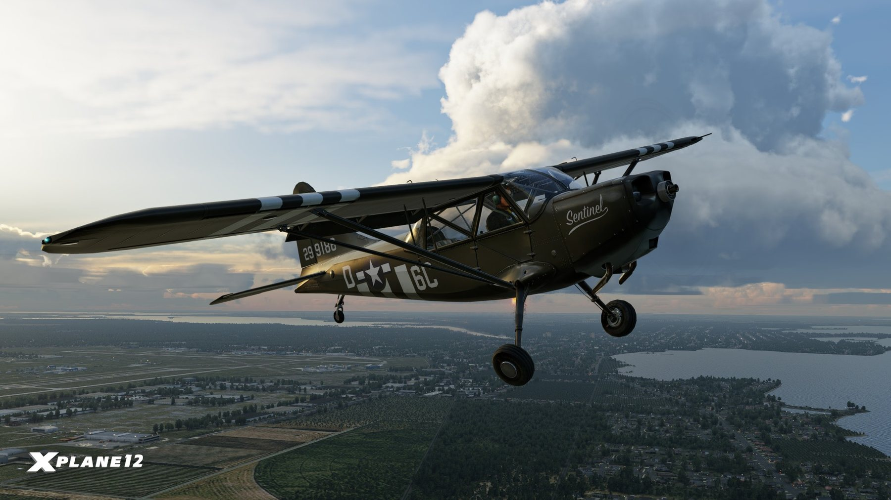
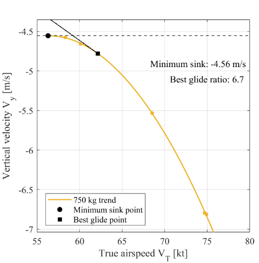
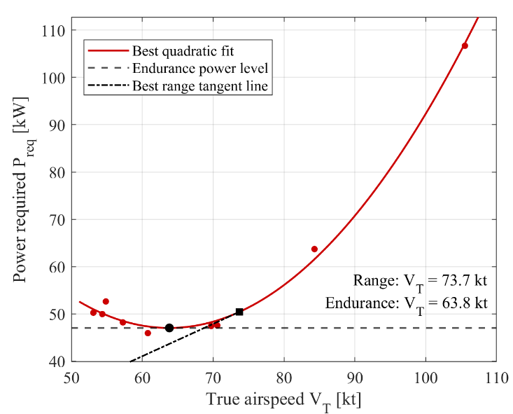
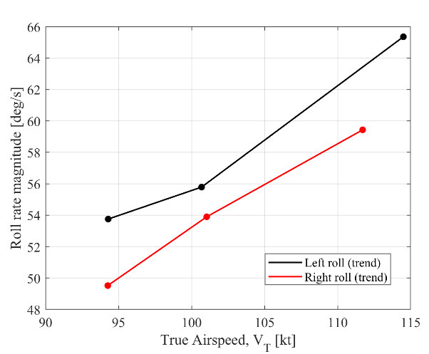
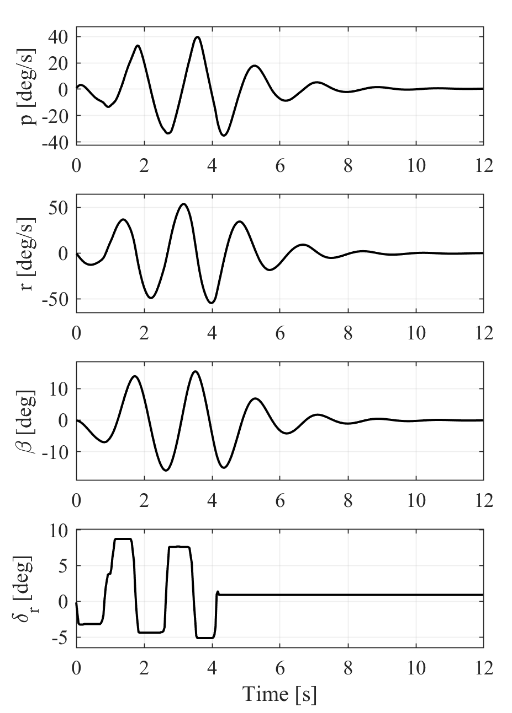

University of Bristol · Flight dynamics coursework and self directed extension · 2025 to 2026
Stinson L-5 simulated flight tests
Out of my own interest, I extended a flight dynamics coursework task into simulated flight tests of the Stinson L-5 in X-Plane, investigating performance, control authority and stability.
My contribution
I flew the tests, wrote a Python tool to select channels and time ranges from the logs, and analysed the results in MATLAB.
Completed in simulation

Stinson L-5 Sentinel in X-Plane. Aircraft illustration.Image: Laminar Research / X-Plane
Planning the tests and processing the flight logs
I flew the simulator myself, setting each flight condition and applying the inputs for glide, control authority and stability tests.
X-Plane logs contain many irrelevant channels, so I wrote a Python tool to select variables, crop time ranges and export CSVs for MATLAB, reusable across every test.

Glide performance analysis from the simulated Stinson tests.

Power required against airspeed from the Stinson analysis.
Comparing glide and powered flight performance
I repeated glide tests at three masses to build glide polars and find minimum sink and best glide speeds, and used level flight data to estimate power and fuel flow for range and endurance. Sparse low speed samples showed where more test points were needed.

Roll authority measured at different speeds in X-Plane.

Dutch-roll excitation and decay in X-Plane. The free response after rudder release was used to estimate damping (p. 11).
Assessing control authority and stability
I compared roll authority at different speeds with full aileron inputs, and measured elevator trim across lift coefficient and centre of gravity to estimate the neutral point, which the small CG range made sensitive to error.
For Dutch roll, I estimated damping from the free oscillation after a rudder input, comparing roll, yaw and sideslip.
Putting flight dynamics into practice
What I enjoyed was taking ideas from the flight dynamics courses and applying them to an aircraft I could fly in the simulator. Planning the manoeuvres, recording the response and processing my own logs made the theory more tangible, while the Python tool let me repeat the analysis without processing each flight by hand.
Tools and methods
X-Plane, Python, MATLAB, flight test planning and handling qualities analysis